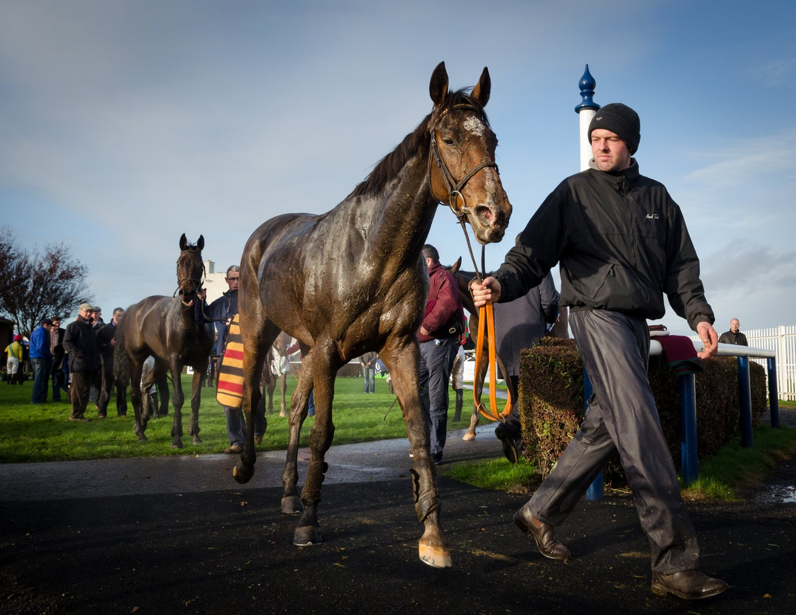

Rayif llega a la Queen Elizabeth II Stakes sin correr desde el Jacques Le Marois
Rayif, segundo favorito, se mide el sábado en Ascot a Talk Of New York, Constitution River, Ten Bob Tony y Zavateri en la Queen Elizabeth II Stakes, Grupo I sobre la milla.

El hijo de Sea The Moon no ha vuelto a pisar una pista de carreras desde agosto. Entonces se impuso en el Prix Jacques Le Marois a Zeus Olympios y Precise. La pausa fue buscada: su equipo descartó el Prix du Moulin porque llegaba solo tres semanas después de aquella victoria.
«Se ha quedado en casa», explicó Nemone Routh, racing manager de Aga Khan Studs en Francia. Hace unos galopes, Rayif trabajó en la pista de cuerda junto a Calandagan. Después ha seguido en los Reservoirs, la recta de entrenamiento de Chantilly. «No ha tenido ningún problema», añadió.
Calandagan, compañero de cuadra, ha acaparado los focos en la preparación de la Qatar Racing British Champions Day. Pero Francis-Henri Graffard y Aga Khan Studs llevan a Ascot otras dos bazas con opciones en el programa del sábado, y Rayif es una de ellas.
El piso se presenta bueno en el hipódromo de Berkshire y apunta a ser más rápido que el habitual en esta reunión. En el entorno del caballo no ven problema. «Ganó las Guineas francesas en un terreno algo blando, y las dos carreras que ha ganado en Deauville fueron en piso rápido, así que le da igual el terreno», resumió Routh.
Tampoco preocupa la recta de la milla de Ascot. «Ya ha ganado en pista recta, así que no creo que eso sea un problema para él», cerró la responsable de Aga Khan Studs en Francia.
Por Martín Larrañeta